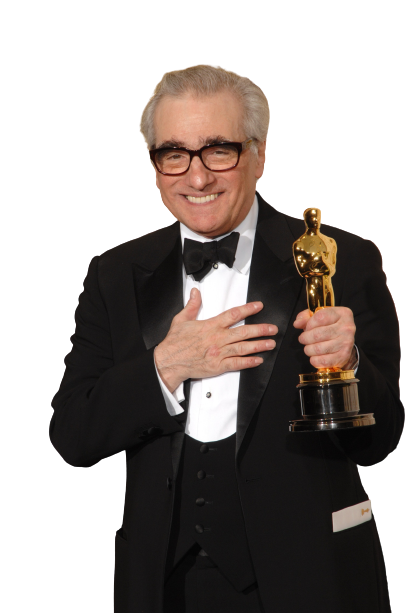

FILMES
⁕ Um pouco da filmografia do diretor:
Curiosidades
Scorsese quase foi padre
Antes de ser 100% apaixonado por filmes, Scorsese havia treinado para se tornar padre e frequentou uma escola de teologia após se formar no ensino médio. Contudo, ele falhou e desistiu depois de apenas um ano.
“Quando era mais jovem, estava pensando em fazer um filme sobre ser um padre. Eu mesmo queria seguir os passos do Padre Príncipe, por assim dizer, e ser padre. Fui para um seminário preparatório, mas falhei no primeiro ano,” revelou o cineasta em entrevista ao Padre Antonio Spadaro.
O primeiro filme de grande orçamento foi uma bomba
Scorsese passou por um grave período de depressão após o lançamento do musical New York, New York. A produção foi um verdadeiro fracasso de bilheteria e Scorsese passou a viver uma dura depressão.
Mas mesmo em meio à doença psicológica, Scorsese se manteve firme nos trabalhos e começou a produzir o grandioso Touro Indomável.
Assistia filmes porque não conseguia praticar esportes
Scorsese sofria de asma quando criança — e isso o impedia de brincar com as crianças da vizinhança. Com isso, ao invés de jogar bola e participar de brincadeiras com os outros, o diretor era mais quieto e escolhia ir ao cinema. Assim, apaixonou-se pela arte de contar histórias nas telonas.
Dirigiu um clipe do Michael Jackson
O clipe famoso de Michael Jackson, Bad, possui 16 minutos e foi dirigido pelo Scorsese. O vídeo possui trechos coloridos e trechos em preto e branco. Porém, ao ser exibido na TV, sempre era apresentada apenas a parte colorida, que continha a música.
Táxi Driver e o clímax de seu final
A violência do clímax de Táxi Driver era tamanha que ele quase foi classificado com um X pela Motion Picture Association of America, empresa responsável por categorizar os filmes de Hollywood por idade. Atualmente, o X representa o NC-17, ou seja, impróprio para menores de idade. Essa classificação é o terror dos diretores, pois restringe o público e, consequentemente, a audiência nos cinemas. Para fugir do temido X, Scorcese colocou cores mais suaves nas cenas sangrentas, atingindo uma classificação abaixo.



{kind=link}
{kind=link}
{kind=link}
{kind=link}
{kind=link}
{kind=link}
{kind=link}
{kind=link}
{kind=link}